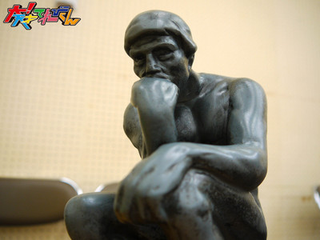
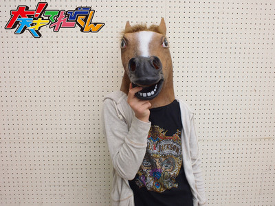

【チャンカワイの大！相撲中継】群馬県前橋場所
1月9日新年1回目の「チャンカワイの大！相撲中継」は群馬県前橋市から。
前橋市はこの日、年に１回の「初市」というお祭りの真っ最中でした！
午前中には、だるまの「お焚き上げ」も行われていました。
火の勢いにびっくり！

そんな中、地元のキャラクターたち、ころとん・たか丸くん・もじゃろーが集結！
全員が真剣に優勝を目指し、現場はピリピリとしたムードが漂いました。
結果は…チャン錦ちゃんの優勝！
チャン錦ちゃん、最近、向かうところ敵なしです！

寒い中、勝負を見守りにきていただいた皆さんも
本当にありがとうございました！
投稿者:大天才テレビジョン社員３号 | 投稿時間:21時00分 | カテゴリ：大！木曜LIVE | 固定リンク


 " title="ソーシャルブックマークについて">
" title="ソーシャルブックマークについて">
※NHKサイトを離れます。
【冬のステージイベントに向けて】最後の稽古編
いよいよNHKでの稽古最後の日。

「お前たち気合入れろー−！！」
出川さんのピコピコハンマーがうなる。
うりゃーーー！！

どりゃーー！！

ううおおおおおお！！！本番がんばるずおおおお！！！おーーー！！

本当に大丈夫かな。。。心配になってきた。。。

本番まであと2日。
投稿者:大天才テレビジョン社員３号 | 投稿時間:20時44分 | カテゴリ：We are 大天才テレビジョン | 固定リンク
" title="ソーシャルブックマークについて">
※NHKサイトを離れます。
最強アバターを決める「アバタイセン」〜第9戦〜
地上最強のアバターを決める超大型企画「アバタイセン」。今回は第8戦。
大天才テレビジョン内部にあるコンピューターが自動対戦した結果、
全世界に存在する 全26090体 のアバターの頂点に立ったのは…
東京都 とらんしーばさん

おめでとう！
ベスト８の対戦結果はこちらです（左クリックで拡大します）。

アバターの強さは、『パーツ』や『色』の組み合わせで変わります！
番組HPにあるトレーニングセンターで自分のアバターと、てれび戦士や出川特命Pの
アバターと対決させて、最強アバターになる組み合わせを見つけてほしい！
君も最強のアバターを作って対戦の時を待て！
アバターの制作はこちらから！
投稿者:大天才テレビジョン社員３号 | 投稿時間:19時00分 | カテゴリ：大！木曜LIVE | 固定リンク
" title="ソーシャルブックマークについて">
※NHKサイトを離れます。
【あけましておめでとうございます】ソーズビー航洋


投稿者:ソーズビー航洋 | 投稿時間:18時00分 | カテゴリ：We are 大天才テレビジョン | 固定リンク
" title="ソーシャルブックマークについて">
※NHKサイトを離れます。


{kind=link}
{kind=link}